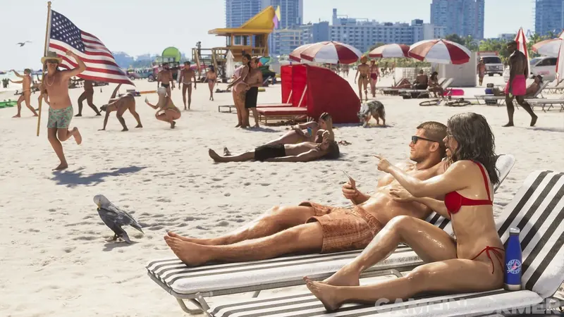

Story und Beziehung
Jason & Lucia- OffiziellJason ist Armeeveteran und arbeitet zu Beginn für Drogenschmuggler in den Leonida Keys. Lucia stammt aus Liberty City, wurde von ihrem Vater im Kampfsport trainiert und ist gerade aus dem Gefängnis entlassen.
- OffiziellWie in GTA V kann man fast jederzeit zwischen den beiden wechseln. Bei Missionen ist der andere meist direkt dabei. Nachdem „ein leichter Coup schiefgeht", müssen sie eine größere Verschwörung in Leonida aufdecken.
- OffiziellNeu: Die Beziehung lässt sich lenken. Ob die beiden Freunde bleiben oder ein Liebespaar werden, entscheidet man durch Story und optionale Entscheidungen. Die romantische Bindung wächst durch kleine Gesten: Händchen halten, Türen aufhalten, Anrufe und Nachrichten zuverlässig beantworten, gemeinsame Unternehmungen annehmen.
- OffiziellDas System ist freiwillig und bringt spielerisch keine Vorteile. Manche Teile der Story hängen aber von der Bindung der beiden ab.
- OffiziellGroße und kleine Entscheidungen verändern laut Rockstar die Richtung der Story so stark, dass sich mehrere Durchgänge lohnen.